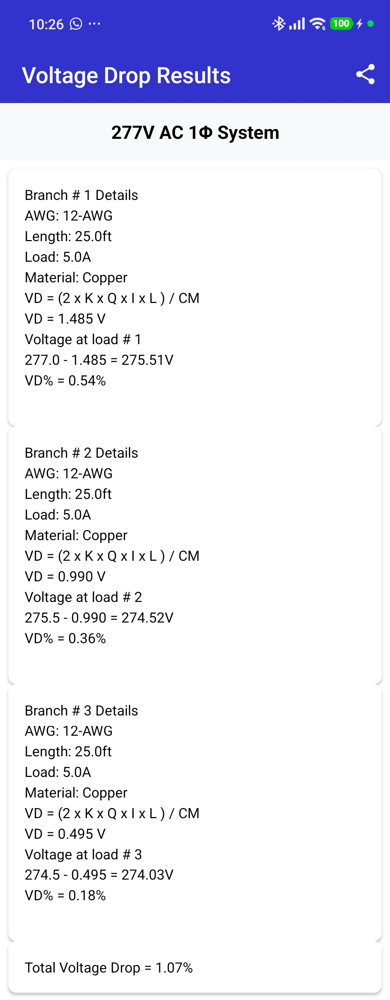
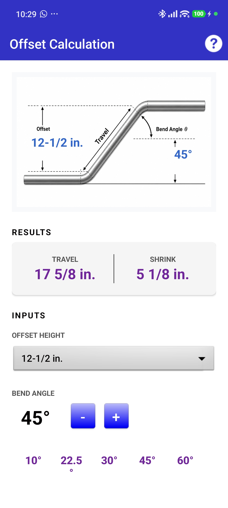
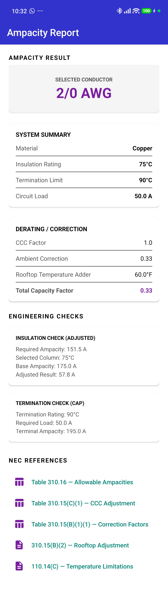
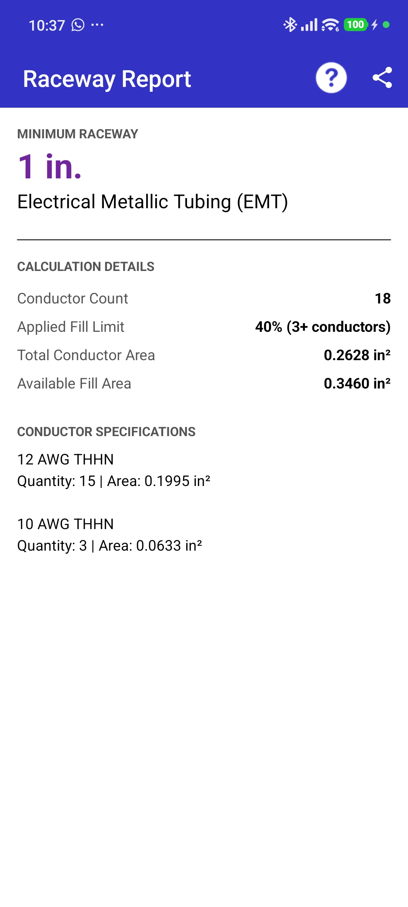
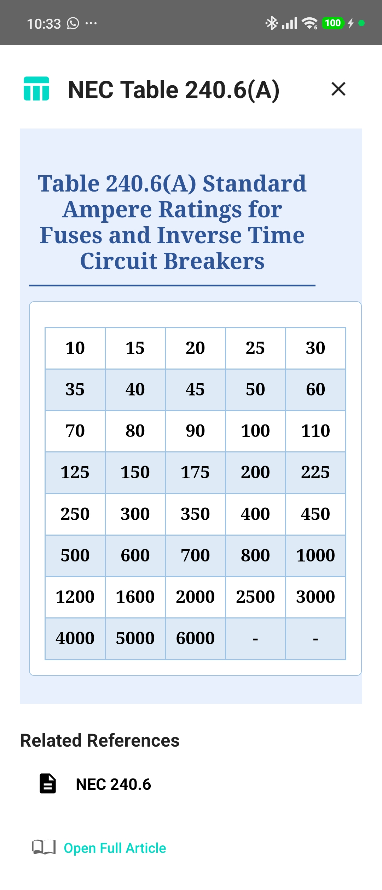
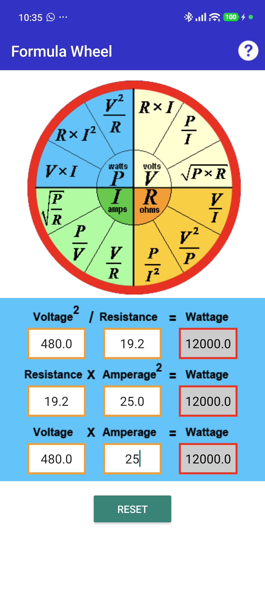
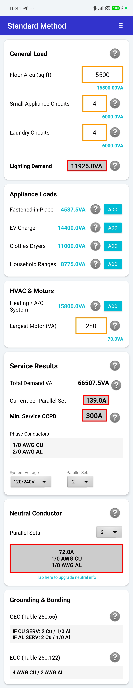

Inside Electrician Bible
Application Screenshots
Explore real calculations, field tools, NEC® references, electrical formulas, and detailed engineering reports available throughout Electrician Bible.







